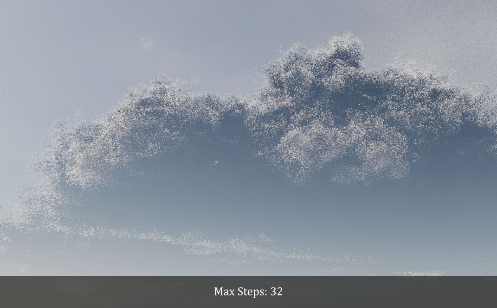
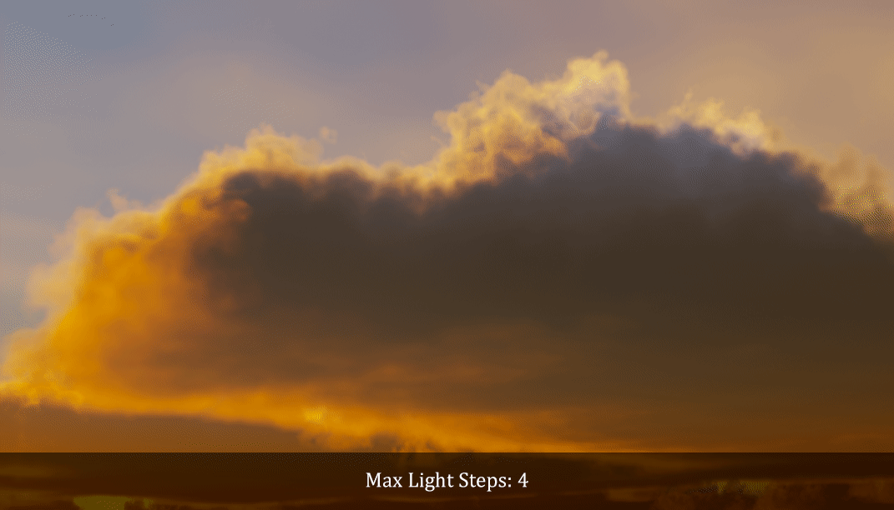
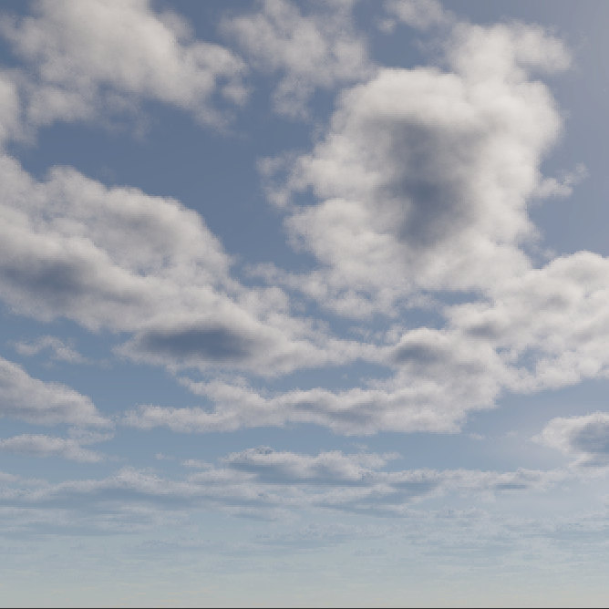
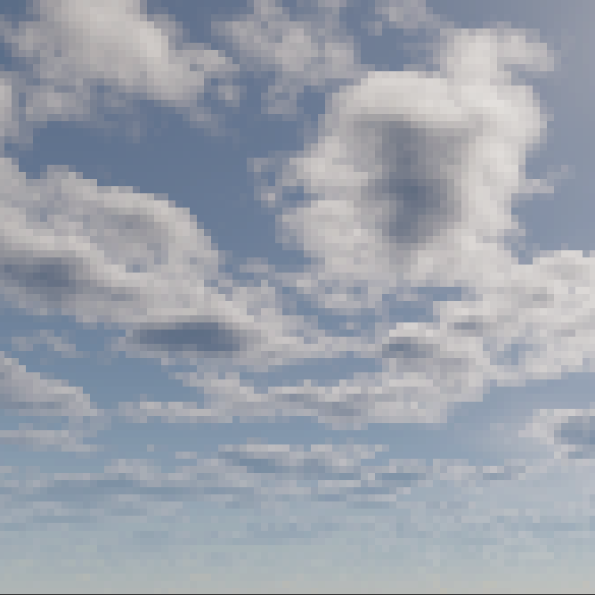
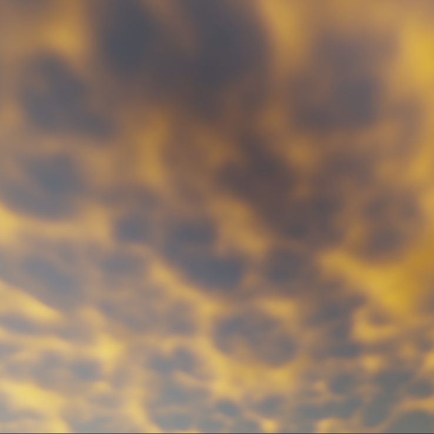

Rendering/Baking
Note
This page is currently under construction.
General
Environment Image Strength
Environment Texture Size
(1024 x 512) * size
Max Steps
Maximum number of steps before giving up.

Max Light Steps
Maximum number of steps before giving up.

Viewport
Start Viewport Editor
Pixel Size
Pixel size for viewport rendering.
1x |
2x |
|---|---|
 |
4x |
8x |
|---|---|
 |
Render
Bake
Render Animation
Environment Texture Size
(1024 x 512) * size
Use Tiling
Render high resolution images in tiles to reduce memory usage, using the specified tile size.
Tile Size
Use Bicubic Sampling
Preserves fine details when magnifying textures. Requires 8x more samples than bilinear sampling.
Bicubic sampling off |
Bicubic sampling on |
|---|---|
 |